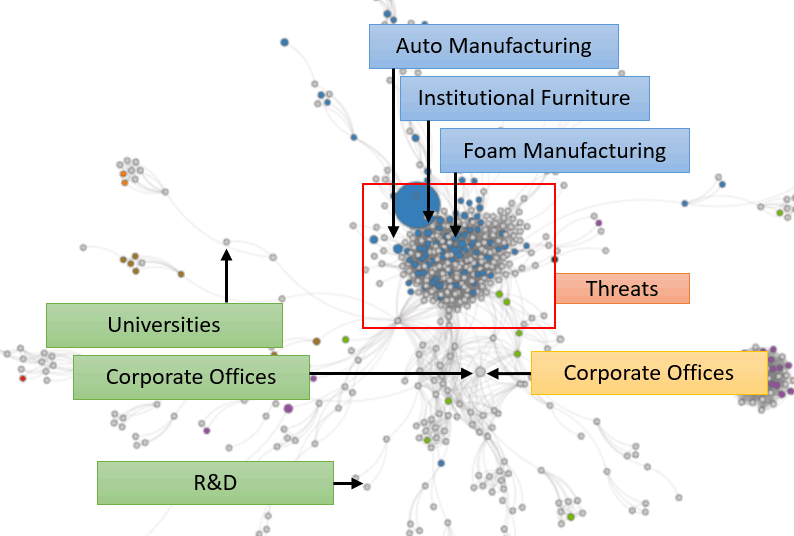

Tupelo has a smaller, highly-concentrated economy challenged by international trade and automation. It needs to seek
new problems it can solve itself, while maintaining its existing businesses and employment opportunities. Our analysis
shows:
- Strengths in Automobile, Furniture, and Foam manufacturing
- Weaknesses in Corporate Offices and some other manufacturing
- Opportunities Corporate Offices, R&D, and Universities
- Threats in Manufacturing
We think about economies as the collection of problems that a region solves. Looking at Tupelo’s industries, we see high
concentration in furniture manufacturing and a scattering of small activity in other manufacturing. Tupelo provides
craftsmen and low-cost labor, which contributed to the recent introduction of automobile manufacturing factories.
When we organize the industries based on their similarity to each other, we again see the lack of diversification in
Tupelo’s economy. In addition, the largest industry – Upholstered Furniture Manufacturing – is located on the periphery
of the manufacturing cluster due to its lack of similarity with other industries. The recent additions of auto and
foam manufacturing added more “connected” industries.
How Tupelo’s industries relate to each other
A network map that positions industries and clusters based on similarity
(Note: Gray circles mean that the region has little/no activity in that industry)

The graph on the left shows the trends from above. Tupelo’s Strengths comes from the expansion occurring around its upholstered
furniture manufacturing. Its Weakness comes from a loss of high-paying jobs in corporate offices. As stated earlier,
Tupelo’s growth will likely come from finding new problems it can solve itself. Coincidentally, our algorithm identified
Opportunities in universities and R&D, two industries that foster entrepreneurship. It also suggested Corporate Offices.
The data suggests this opportunity because Tupelo’s manufacturing factories have not been accompanied by headquarters,
but this also highlights the need for local entrepreneurship. Finally, the dual threats of automation and international
trade continue to pose Threats to Tupelo’s manufacturing industries.
Tupelo might also want to see the publicly available analysis from above for neighboring cities such as Nashville, Memphis,
Starkville, and Huntsville, or for similar cities in Georgia and Texas.
We use this analysis to help create FOCUS for cities. Once a city like Tupelo understands what’s possible, probable,
and optimal, it can create a strategy that builds around its strengths, resolves its weaknesses, unlocks its opportunities,
and hedges against its threats.